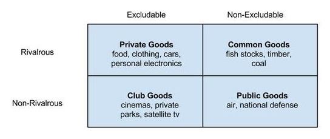
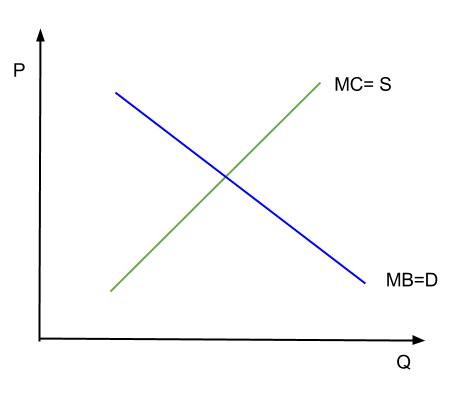
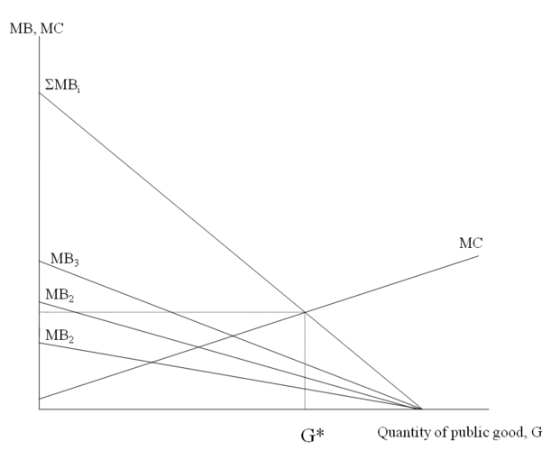

There are four types of goods in economics, which are defined based on excludability and rivalrousness in consumption.
Define a good
There are four categories of goods in economics, which are defined based on two attributes. The first attribute is excludability, or whether people can be prevented from using the good. The second is whether a good is rival in consumption: whether one person's use of the good reduces another person's ability to use it.
National defense provides an example of a good that is non-excludable. America's national defense establishment offers protection to everyone in the country. Items on sale in a store, on the other hand, are excludable. The store owner can prevent a customer from obtaining a good unless the customer pays for it. National defense also provides an example of a good that is non-rivalrous. One person's protection does not prevent another person from receiving protection. In contrast, shoes are rivalrous. Only one person can wear a pair of shoes at a time.
Combinations of these two attributes create four categories of goods :
There are four categories of goods in economics, based on whether the goods are excludable and/or rivalrous in consumption.
A private good is both excludable and rivalrous.
Define a private good
In economics, a private good is defined as an asset that is both excludable and rivalrous. It is excludable in that it is possible to exercise private property rights over it, preventing those who have not paid from using the good or consuming its benefits. For example, person A may have the means and will to pay \$20 for a t-shirt. Person B may not wish to pay \$20 or may not be able to do so. Person B would not be able to purchase the t-shirt. Additionally, the private good is rivalrous in that its consumption by one person necessarily prevents consumption by another. When person A purchases and drinks a bottle of water, the same bottle of water is not available for person B to purchase and consume.
A private good is a scare economic resource, which causes competition for it. Generally, people have to pay to enjoy the benefits of a private good. Because people have to pay to obtain it, private goods are much less likely to encounter a free-rider problem than public goods. Thus, generally, the market will efficiently allocate resources to produce private goods.
In daily life, examples of private goods abound, including food, clothing, and most other goods that can be purchased in a store. Take an example of an ice cream cone . It is both excludable and rivalrous. It is possible to prevent someone from consuming the ice cream by simply refusing to sell it to them. Additionally, it can be consumed only once, so its consumption by one individual would definitely reduce others' ability to consume it.
An ice cream cone is an example of a private good. It is excludable and rival.
Individuals cannot be excluded from using a public good, and one individual's use of it does not limit its availability to others.
Define a public good
A public good is a good that is both non-excludable and non-rivalrous. This means that individuals cannot be effectively excluded from its use, and use by one individual does not reduce its availability to others. Examples of public goods include fresh air, knowledge, lighthouses, national defense, flood control systems, and street lighting .
A streetlight is an example of a public good. It is non-excludable and non-rival in consumption.
Public goods can be pure or impure. Pure public goods are those that are perfectly non-rivalrous in consumption and non-excludable. Impure public goods are those that satisfy the two conditions to some extent, but not fully.
The production of public goods results in positive externalities for which producers don't receive full payment. Consumers can take advantage of public goods without paying for them. This is called the "free-rider problem. " If too many consumers decide to "free-ride," private costs to producers will exceed private benefits, and the incentive to provide the good or service through the market will disappear. The market will thus fail to provide enough of the good or service for which there is a need.
For example, a local public radio station relies on support from listeners to operate. The station holds pledge drives several times a year, asking listeners to make contributions or face possible reduction in programming. Yet only a small percentage of the audience makes contributions. Some audience members may even listen to the station for years without ever making a payment. Those listeners who do not make a contribution are "free-riders. " If the station relies solely on funds contributed by listeners, it would under-produce programming. It must obtain additional funding from other sources (such as the government) in order to continue to operate.
The government is providing an efficient quantity of a public good when its marginal benefit equals its marginal cost.
Explain the optimal quantity of a public good
To determine the optimal quantity of a public good, it is necessary to first determine the demand for it. Demand for public goods is represented through price-quantity schedules, which show the price someone is willing to pay for the extra unit of each possible quantity. Unlike the market demand curve for private goods, where individual demand curves are summed horizontally, individual demand curves for public goods are summed vertically to get the market demand curve. As a result, the market demand curve for public goods gives the price society is willing to pay for a given quantity. It is equal to the marginal benefit curve. Due to the law of diminishing marginal utility, the demand curve is downward sloping.
Often, the government supplies the public good. The supply curve for a public good is equal to its marginal cost curve. Because of the law of diminishing returns, the marginal cost increases as the quantity of the good produced increases. The supply curve therefore has an upward slope.
As already noted, the demand curve is equal to the marginal benefit curve, while the supply curve is equal to the marginal cost curve. The optimal quantity of the public good occurs where MB (society's marginal benefit) equals MC (provider's marginal cost), or where the two curves intersect . When MB = MC, resources have been allocated efficiently.
The optimal quantity of public good occurs where MB = MC.
The public good provider uses cost-benefit analysis to decide whether to provide a particular good by comparing marginal costs and marginal benefits. Cost-benefit analysis can also help the provider decide the extent to which a project should be pursued. Output activity should be increased as long as the marginal benefit exceeds the marginal cost. An activity should not be pursued when the marginal benefit is less than the marginal cost. An activity should be stopped at the point where MB equals MC. This is the MC=MB rule, by which the provider of the public good can determine which plan, will give society maximum net benefit.
The aggregate demand curve for a public good is the vertical summation of individual demand curves.
Analyze the demand for a public good.
The aggregate demand for a public good is derived differently from the aggregate demand for private goods.
To an individual consumer, the total benefit of a public good is the dollar value that he or she places on a given level of provision of the good. The marginal benefit for an individual is the increase in the total benefit that results from a one-unit increase in the quantity provided. The marginal benefit of a public good diminishes as the level of the good provided increases.
Public goods are non-rivalrous, so everyone can consume each unit of a public good. They also have a fixed market quantity: everyone in society must agree on consuming the same amount of the good. However, each individual's willingness to pay for the quantity provided may be different. The individual demand curves show the price someone is willing to pay for an extra unit of each possible quantity of the public good.
The aggregate demand for a public good is the sum of marginal benefits to each person at each quantity of the good provided . The economy's marginal benefit curve (demand curve) for a public good is thus the vertical sum all individual's marginal benefit curves. The vertical summation of individual demand curves for public goods also gives the aggregate willingness to pay for a given quantity of the good.
The sum of the individual marginal benefit curves (MB) represent the aggregate willingness to pay or aggregate demand (∑MB). The intersection of the aggregate demand and the marginal cost curve (MC) determines the amount of the good provided.
This is in contrast to the aggregate demand curve for a private good, which is the horizontal sum of the individual demand curves at each price. Unlike public goods, society does not have to agree on a given quantity of a private good, and any one person can consume more of the private good than another at a given price.
The efficient quantity of a public good is the quantity that maximizes net benefit (total benefit minus total cost), which is the same as the quantity at which marginal benefit equals marginal cost.
The government uses cost-benefit analysis to decide whether to provide a public good.
Explain how to determine the net cost/benefit of providing a public good
The government uses cost-benefit analysis to decide whether to provide a particular public good and how much of it to provide. Cost-benefit analysis, which is also sometimes called benefit-cost analysis, is a systematic process for calculating the benefits and costs of a project to society as a whole.
The positive and negative effects captured by cost-benefit analysis may include effects on consumers, effects on non-consumers, externality effects, or other social benefits or costs. The guiding principle is to list all parties affected by a project and add a negative or positive value that they ascribe to the project's effect on their welfare. Benefits and costs are expressed in monetary terms, and are adjusted for the time value of money, so that all flows of benefits and costs over time are expressed on a common basis in terms of their net present value. Financial costs tend to be most thoroughly represented in cost-benefit analyses due to relatively abundant market data. It is much more difficult to capture non-financial welfare impacts. For example, it is very difficult to place a dollar value on human life, consumers' time, or environmental impact.
Imagine that the government is considering a project to widen a highway . The benefits side of the analysis might include time savings for passengers who can now avoid traffic, an increase in the number of passenger trips (as more people could now use the road), and lives saved by dint of fewer car accidents. The cost side of the analysis would include the cost of land that must be acquired prior to construction, construction, and maintenance. These costs and benefits will need to be translated into monetary terms for the sake of analysis.
The benefits of a highway expansion project might include time savings for passengers, additional passenger trips, and saved lives. Costs might include construction and maintenance.
The procedure for conducting cost-benefit analysis is as follows:
The tragedy of the commons is the overexploitation of a common good by individual, rational actors.
Describe the tragedy of the commons
Common goods are goods that are rivalrous and non-excludable. This means that anyone has access to the good, but that the use of the good by one person reduces the ability of someone else to use it. A classic example of a common good are fish stocks in international waters; no one is excluded from fishing, but as people withdraw fish without limits being imposed, the stocks for later fishermen are potentially depleted.
The tragedy of the commons is the depletion of a common good by individuals who are acting independently and rationally according to each one's self-interest. Consider, the example of fish in international waters. Each individual fisherman, acting independently, will rationally choose to catch some of the fish to sell. This makes sense: there is a resource that the fisherman is able to use to generate a profit. However, when a lot of fishermen, all thinking this way, catch the fish, the total stock of fish may be depleted. When the stock of fish is depleted, none of the fishermen are able to continue fishing, even though, in the long run, each fisherman would have preferred that the fish not be depleted. The tragedy of the commons describes such situations in which people withdraw resources to secure short-term gains without regard for the long-term consequences.
Not all common goods, however, suffer from the tragedy of the commons. If individuals have enlightened self-interest, they will realize the negative long-term effects of their short-term decisions. This would be the same as the fishermen realizing that they should limit their fishing to preserve the stock of fish in the long-term.
In the absence of enlightened self-interest, the government may step in and impose regulations or taxes to discourage the behavior that leads to the tragedy of the commons. This would be like the government imposing limits on the amount of fish that can be caught.
Fish populations are at risk of becoming fully extinct due to overfishing. The Food and Agriculture Association estimated 70% of the world's fish species are either fully exploited or depleted.
The free-rider problem is when individuals benefit from a public good without paying their share of the cost.
Describe the Free-Rider Problem
It is easy to think about public goods as free. In your everyday life, you benefit from public goods such as roads and bridges even though no transaction occurs when you use them. However, even public goods need to be paid for. In the case of roads and bridges, everyone pays taxes to the government, who then uses the taxes to pay for public goods .
Free riders are able to use roads without paying their taxes because roads are a non-excludable public good.
Public goods, as you may recall, are both non-rivalrous and non-excludable. It is the second trait- the non-excludability- that leads to what is called the free-rider problem. The free-rider problem is that some people may benefit from a public good without paying their share of the cost.
Since public goods are non-excludable, free-riders not only can't be prevented from using the good, but actually have an incentive to continue to free-ride. If they will be able to use the public good whether they pay their share of the costs, they might as well not pay.
Take the military, for example. National security is a public good: it is both non-rivalrous and non-excludable. In order to have such a public good, everyone pays taxes which are then used by the government to finance the military. However, there are undoubtedly people who have not paid their taxes. These people, without having paid their share of the cost of having a military, still benefit from the protection the military provides. They are free-riders.
Of course, there are commonly regulations that attempt to discourage free-riding. For government-provided public goods, the government makes sure that everyone pays their share of the costs by enforcing tax laws. The threat of fines or jail time are enough of a threat that most people find it more appealing (in the US, at least) to pay their share of public goods via taxes than to free-ride.
{kind=link}
{kind=link}
{kind=link}